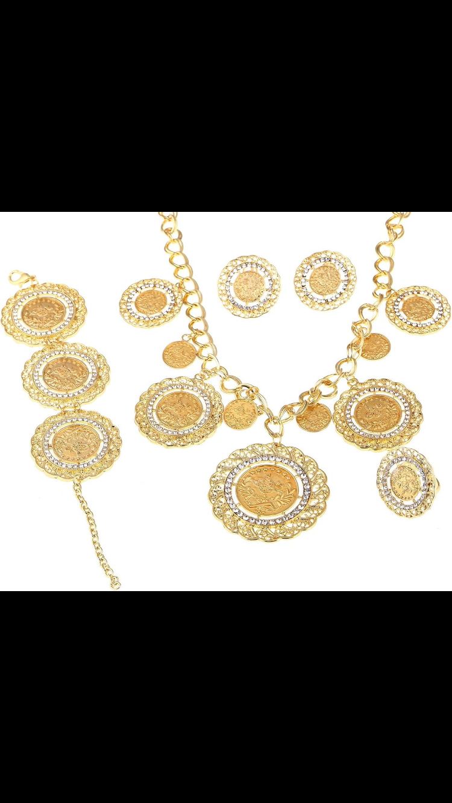
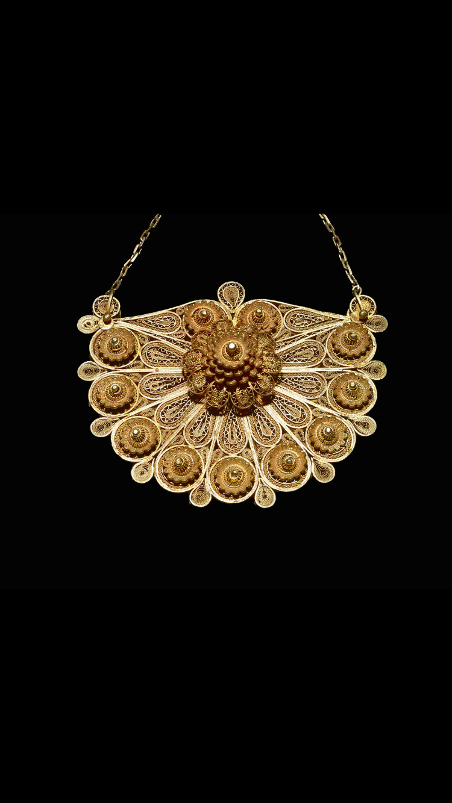
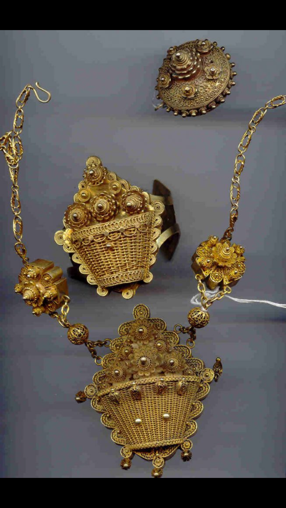
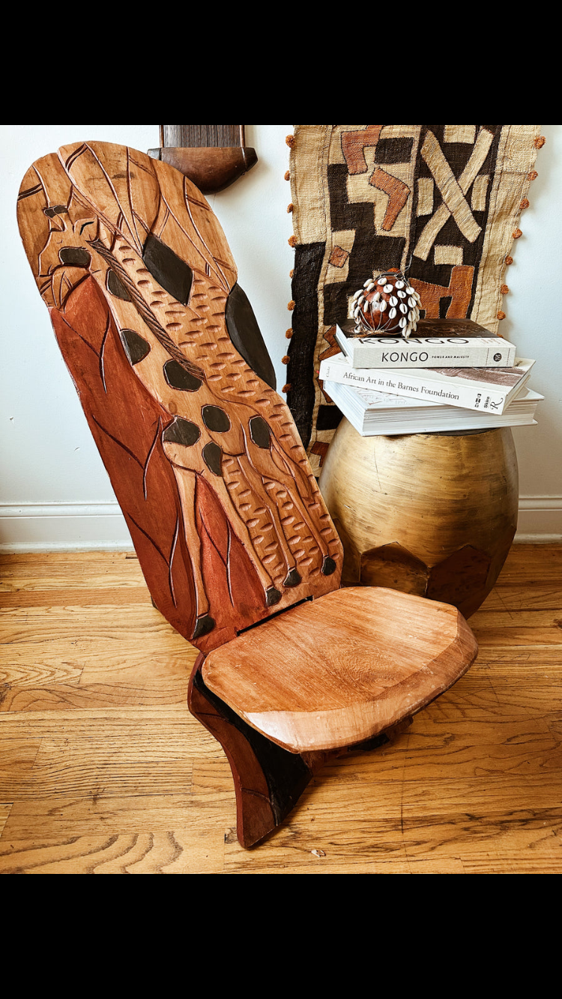
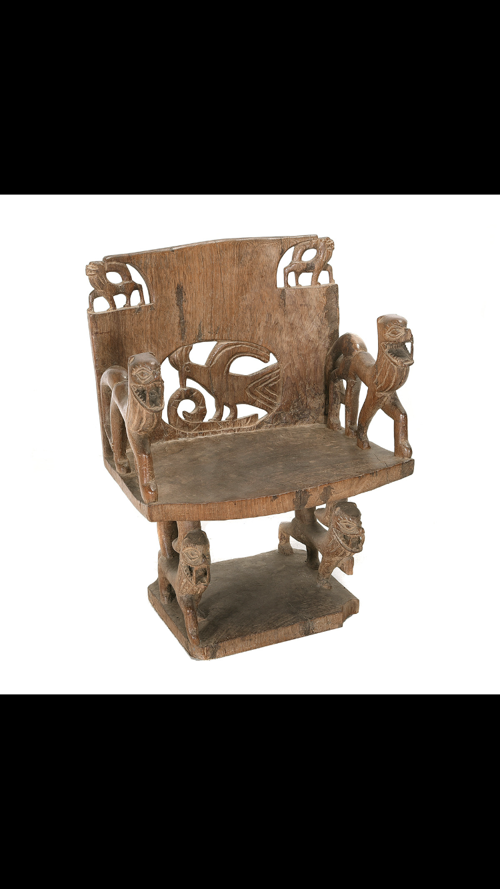
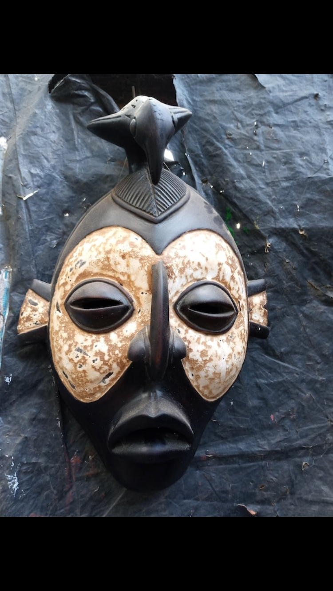
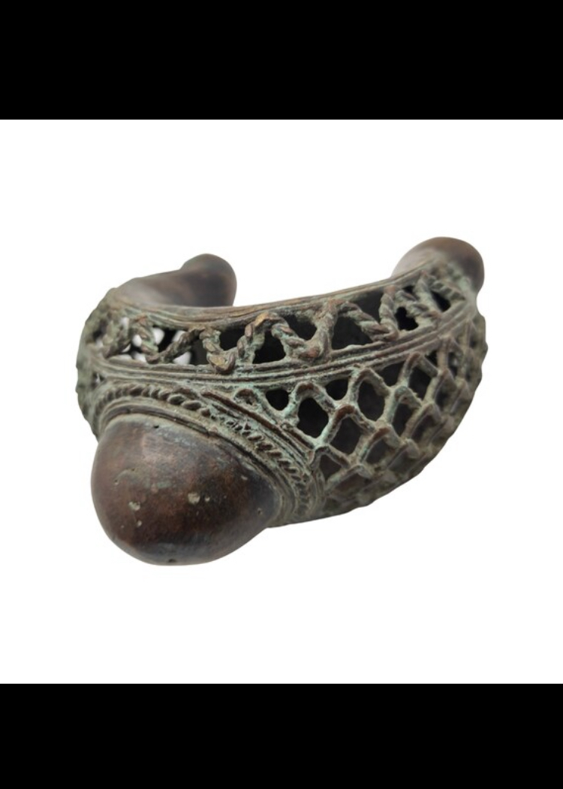

About Us
Based in San Antonio, we specialize in rare African pieces — from vintage gold jewelry and hand-carved furniture to rare collectibles. We also handle bulk phone and accessory exports. Our business is built on trust, heritage, and global reach.
Featured Items
Featured Items
19th Century Ashanti Gold Pendant
Handcrafted in Ghana, this piece carries royal significance.
Handcrafted in Ghana, this piece carries royal significance.
Tuareg Silver Cross Necklace
Traditional symbol worn for protection and heritage in North Africa.
Traditional symbol worn for protection and heritage in North Africa.
Zulu Beaded Choker
Handmade with intricate patterns representing family lineage and pride.
Handmade with intricate patterns representing family lineage and pride.
Ethiopian Coptic Cross Pendant
An ancient symbol of faith crafted with unique openwork design.
An ancient symbol of faith crafted with unique openwork design.
Fulani Gold Hoop Earrings
Classic design passed down through generations of West African women.
Classic design passed down through generations of West African women.
Yoruba Carved Throne Chair
A symbol of power, detailed with spiritual symbols and aged patina.
A symbol of power, detailed with spiritual symbols and aged patina.
Bamileke Drum Stool
Hand-carved from a single tree trunk, used in royal ceremonies.
Hand-carved from a single tree trunk, used in royal ceremonies.
Akan Royal Stool
Historically reserved for chiefs, each stool tells a tribal story.
Historically reserved for chiefs, each stool tells a tribal story.
Dogon Ladder
Rustic wood ladder used in Mali granaries, now a collectible display.
Rustic wood ladder used in Mali granaries, now a collectible display.
Tuareg Tent Poles
Ornately carved architectural elements used in nomadic desert camps.
Ornately carved architectural elements used in nomadic desert camps.
Rare Collectible
A unique ceremonial collectible, preserved through generations of African heritage.
Antique Furniture Collection



Vintage Jewelry




Contact
📍 San Antonio
📞 +1 210-501-1285
WhatsApp: +1 313-420-3253
📧 susansunnyi18@gmail.com